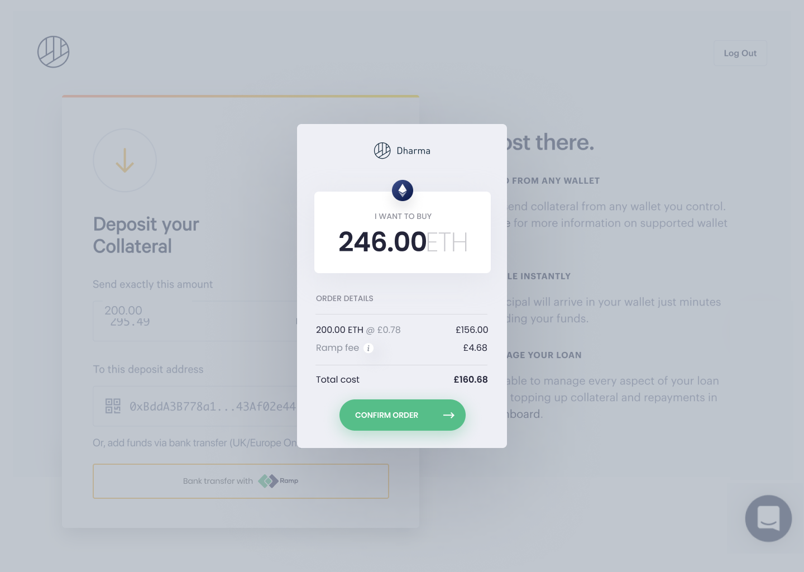
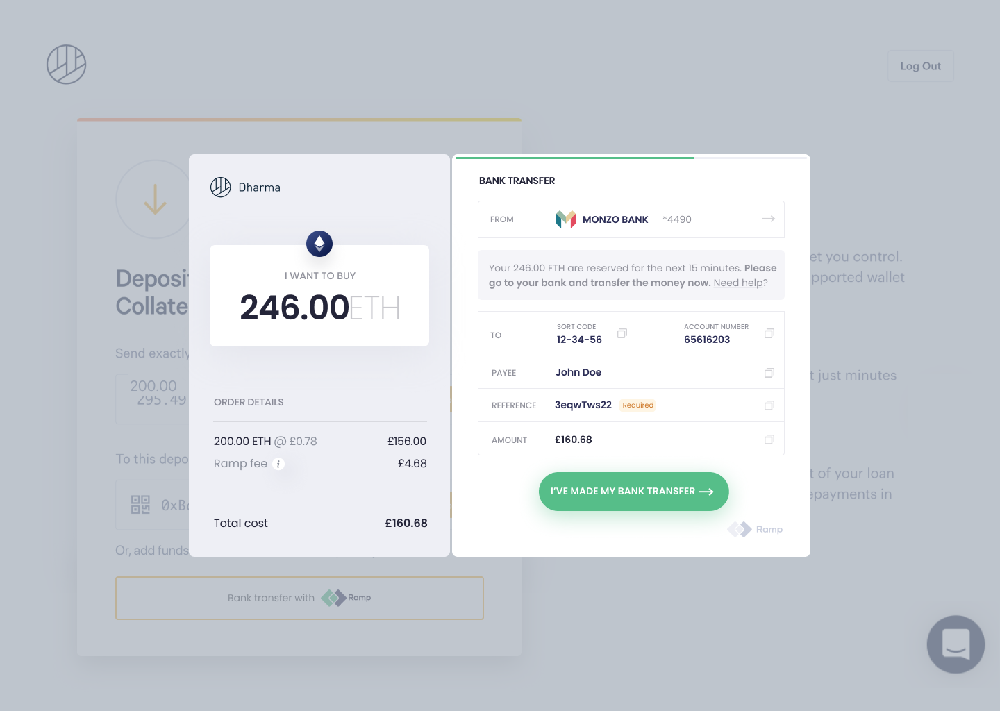
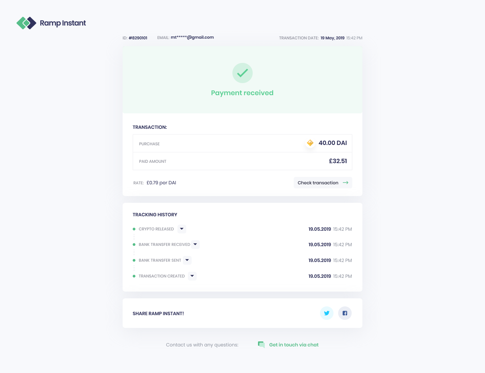

Ramp
The world of blockchain and crypto-currency’s greatest challenge is probably getting people to use them. The on-boarding process is where the entire category of products and services has traditionally left wanting. Ramp Network have a product that solves a lot of that by making it easy to purchase crypto assets and currency with regular (fiat) bank accounts and credit cards. I helped facilitate, research and design solutions to just that.


We reworked and refined Ramp’s purchase flow to further validate the product itself and test out ideas we had come up with together on-boarding process. This means we designed the user experience to be faster and make more sense, refining the user interface while enhancing the visual design.

Through a modified and distributed design sprint we came up with and prioritised ideas to validate and refine. This intense and rigorous process helped us reconcile the user and technical pain points which we then tested with users to validate.
The result was an improved and refined on-boarding and purchase flow as well as a a product and value proposition validation. The Ramp team then had a clear product plan to execute and make user’s path to using all of the promises of blockchain to their potential in an understandable and usable way.
Watch the video on Ramp’s Twitter.
{kind=link}
Read the case study on Medium here.
With DeepWork Studio